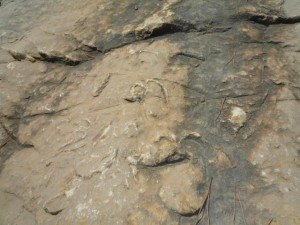

もう年が明けて１週間が経ってしまいましたが、改めて明けましておめでとうございます。今年もまたぼちぼちとページを更新していこうと思っています。
青空の広がる南仏から暗ーいパリに戻りため息が出そうですが春まで頑張ります。
写真はマルセイユの旧港。前は車でいつも混雑していた場所ですが、整備が進んで歩行者のための広場になっていました。がらっと雰囲気が変わっていてびっくりしました。
お正月でも太陽と青空の南仏です。
長い夜の続くヨーロッパの冬。ぐっすり眠れる人もいれば、不眠症で悩んでいる人も多い。
フランスではここ５０年で人々の平均睡眠時間が１時間３０分ほど減ってしまったそうです。平日６時間５８分、週末７時間５０分の睡眠時間。さららに３分の１のフランス人は平均たった５時間もしくは６時間しか眠らないそうです。また若者の平均睡眠時間は６時間４０分でこちらも低下状態。
寝不足による疲労、集中力低下は交通事故につながり、また同じく睡眠が足りないことで肥満や糖尿病などのリスクも増えるそうです。
現在では、睡眠薬に頼るフランス人がほとんどで、ヨーロッパでも一番その数は多いようです。ヨーロッパ全体が６％ととすると、フランス人の率は１４％。
普段のストレスからなのでしょうか。昔と違って社会で求められることが多すぎて寝る時間が削られてしまうんでしょうね、現代社会は。
フランスの歴史において忙しかっただろうなあと思われる人物、ナポレオンさんはどうだったのでしょうか。

彼はだいたい23時くらいに就寝し、夜中の３時に一度起き、また午前５時あたりに床に就き、７時起床、というようなリズムだったそうです。彼は危険のまっただ中にあっても眠ることができたという。ある意味、寝ることにおいても偉大ですね。
偉大な科学者たちはどうでしょう？

アインシュタインさんは、たっぷり１０時間（時にそれ以上）眠ることができ、

トーマス・エジソンさんは少ししか眠らず、たくさん眠る人は怠け者だと思っていたそうです。面白いですね。
最近では昼寝の効果なども証明されてきていますから、いろんな工夫がされ生活習慣も改善されるといいですね。
私も以前住んでいた場所には近所の建物の屋上にアンテナがたくさん設置されていて（おそらく携帯電話用の？）、主人も私もすごい偏頭痛に悩ませれ眠れなかったのを覚えています。引っ越してきてからはパッタリ頭痛が消えてしまいましたが。あんなに困ってたのに。近くには森もあるので空気も比較的きれいだし。やはり環境は大切ですね。電磁波だけではありません。都会だと夜になっても暗くならないですからね。いつまでも明るい。これも睡眠の障害になるそうです。
せっかくの長い冬の夜、ぐっすり眠れるといいですね。
参考：Figaro Magazine
パリと言えば犬を連れて散歩するパリジャンを想像しますが、最近猫をペットにする人が増えているそうです。猫の方が世話が簡単だからでしょうか。メトロでもよく猫を専用のバッグに入れて移動する人を見かけます。
どちらかというと犬派の私ですが、猫も観察してみると楽しい。マルセイユの実家で飼われている猫のフィフィ。ものすごく警戒心が強く慣れるのに数年かかりました。ちょっとした物音に驚いたり、雷が鳴った日には大混乱。
そこで見つけたことわざ！
Chat échaudé craint l’eau froide. 火傷した猫は冷たい水を怖がる。
本当に用心深い。
そう日本語で言う、＜羹に懲りて膾を吹く＞ と全く同じですね。熱い吸い物で口を火傷した者は膾のような冷たい料理まで吹いて冷まそうとする。
英語にも同じ表現がありました。A scalded cat fears cold water.
確かに一度失敗すると慎重になるけれど、
He who fears to suffer, suffers from fear! なんて表現もあるのでほどほどに。
(苦痛を怖がる者は、その恐怖に苦しむことになる）
夏のヴァカンスでプロヴァンス滞在中、どこかにドライブに行こうということになりました。まだ行ったことのない所に連れて行ってあげようと義理の両親が提案。グラナム遺跡と呼ばれる場所に出かけてきました。
遺跡を見る前にまずは歴史を整理しておきましょう！
紀元前のプロヴァンス地方の歴史：
青銅器時代—鉄器時代（紀元前１２００—紀元前５００年）
ケルト人が中部ヨーロッパに広まる。ギリシャからの影響などを受け文化が発展。鉄製武器を身に付けヨーロッパ各地で活動。
紀元前６００年頃
植民市マッサリア(マルセイユ)が古代ギリシャ船乗りのボカイア人によって築かれる。
紀元前３００—２００年
さらにマッサリアはポエニ戦争でローマ側につきカルタゴと戦う。
紀元前１００
ゲルマン人に追われたケルト人(ガリア人またはゴール人)は西フランスとスペインに移動。のちローマのカエサルらによって征服される(カエサルのガリア戦記が有名)。地中海沿いの地域はアウグストゥスの時代にはガリア・ナルボネンシスという名前で呼ばれるようになる（もちろんこの地方にはギリシャ人も多く住んでいた)。ちなみにこのガリア人たちは中世にゲルマン系のフランク人に吸収されフランス人に同化していく。
このように、ヨーロッパは様々な民族が移動することによってそれぞれの国が少しずつ形成されていきます。プロヴァンス地方も同様に、ケルト人の一派ガリア人、ギリシャ人、ローマ人とさまざまな影響を受けているということをまずは理解しなければ、遺跡の面白さがつかめません。
それではグラナム遺跡に向かってみましょう。
まずは駐車場のすぐそばに立つ大きな遺跡が２つ。まず１つ目は凱旋門。

そしてこちら紀元前２５年に建てられたという霊廟。皇帝アウグストゥスの二人の孫のための記念碑だそうです。
紀元前ですよ！
道を渡って反対側に移り少し歩くと遺跡への入り口があります。ここで入場券(大人7,50ユーロ)を買って中に進んでいきます。お土産物も売っているので見学の後にでも見てみるといいですね。入り口も出口も同じ所を通ります。

この地にケルト人が定住したのは紀元前７または８世紀頃と言われます。

ケルト神Glanとお供の女神が病回復に効果のあるという水源近くに住み始めたことが、このグラナムの起源となっています。この水源の噂は広まり、その水を求めてたくさんの巡礼者がこの集落を訪れました。
写真にある石の台は、身体障害者のために作られたものです。体が不自由で階段を降りられない人はこの台に寝転がり、ありがたい水を体にかけてもらったそうです。

そしてその効果を得られた裕福な者は右の写真のようにお礼の石碑を建てました。さらに裕福な者(この地域を支配する者)は水源のそばに神殿を建てました(左写真)。

集落で何かを決定する際に使われた広場。ここで決めごとの賛成反対を多数決で決めたそうです。手に石の玉をを持って中央にある石つぼの中にそっと入れて取り決めたそうです。

こちら集落に存在した肉屋さん(左)とオリーブ油のお店(右)の跡です。当時は冷蔵庫もなく、お肉の腐敗も早かったそうです(当たり前ですが)。お肉はお祭り事などの際に食されていました。このレ・ボー・ド・プロヴァンスにはオリーブの木が一帯に広がっていますが、昔からオリーブオイルはあったんですね。なるほどーとうなずきながらガイドさんの話に聞き入っていました。


共同浴場跡。左手には水が溜めてあり(プール)、右手には３つの部屋が設けられていました。一つ目は暑い部屋、二つ目は暖かい部屋、次が冷たい部屋。まずは体にオリーブオイルをかけ、建物の前にある広場で体を鍛えるためのトレーニングをします。すると体は砂だらけになりますね。その状態で暖かく保たれている部屋に入り、オイルと砂と一緒にむだ毛の処理をしてもらい、強いマッサージを受けます。次に暑い部屋に入って汗をかき、さらに暖かい部屋で軽いマッサージを受けます。仕上げは再度暑い部屋で汗をかいた後に冷たい部屋に入る。夏の時期などはその代わりにプールに入ったようです。
と、ガイドさんが一般的な共同浴場の利用の仕方を説明してくれました。
さてこちらの壁は三段階構成になっています。一番元になっているのがガリア人作、その上にギリシャ人、ローマ人と手法が変わっているのが分かります。
最後は、比較的裕福な家の 遺跡です。家の中央には水が溜めてあり、太陽の光が反射して家の中が明るくなるように工夫してあったようです。この周りにいくつかの部屋が囲むように並んでいるのが特徴的です。このように水が豊富にあるため、集落の外まで出かけなくても家でトイレができたそうです。家の一角には奴隷たちの部屋もありました。奴隷と行っても、家族の一員のようなものです。昔の人の知恵はすばらしい！
他にもたくさん興味深い遺跡が保存されています。フランス語ができればガイドさんが詳しく説明してくれます。何人かのガイドさんがいるようでしたが、私たちのあたったガイドさんはなかなか説明がうまく、図などを使って面白く話してくれました。
所在地
Site archéologique de Glanum
Route des Baux-de-Provence
13210 Saint-Rémy-de-provence
夏に訪れる際には帽子をお忘れなく。日陰がないため、かなり暑いです！ 近くには レ・ボー・ド・プロヴァンスもあるので寄ってみてはどうでしょうか。
マルセイユの旧港からバス(２１番)に乗って今日はカランクにピクニック。出発前にサンドイッチとドリンクを買って準備万端。始発だったのですぐに席を確保できましたが、すぐにバスは人でいっぱい。４０分くらいで終点に着き、そこからハイキング開始です。終点は大学の敷地内にあり、そこから南にまっすぐ歩いていくとカランクを一望できる場所へと続きます。

ハイキングコースは歩道がしっかり作られており歩きやすく、海から吹いてくる風がとても気持ちがいい。カランクにはいくつものコースがあり、海に通じる道や、崖を登っていく道などさまざま。今回は一番シンプルなコースです。
Calanque de Morgiou モルジウカランク
ヴァカンス期ともあって途中たくさんの水着姿の人とすれ違いながらどんどん歩いて進んでいきました。4,5Km、1h30のハイキングです。

海に行きたい人は、コースをどんどん下っておりていきますが、私たちは崖からの景色を見るために途中の分岐点で右折しました。ほとんど人もなく、ぶらりぶらりと写真を撮りながら歩いていきます。


途中カランクの歴史を説明するパネルを何枚か見つけました。岩の中に化石なんかも発見できますよ。


５万年前は100Mも海面が低かったそうですが、１万年前に海面が戻り、気候変化の影響などで現在のような地形になったそうです。

さあ、ここから地中海の青い海が見えてきます！


海へのアクセスも可能ですが、歩くのが・・・いいエクササイズになりますが。
最終点は展望台になっており、カランクや地中海を一望できるようになっています！ものすごくきれいです。海から崖を見上げるのもよし、崖から海を見下ろすのもまた美しい。
何回訪れても感動する景色があります。
以前は海側からアクセスをしました。そのときの様子はカシス・カランクのページで紹介しています！
{kind=link}
{kind=link}